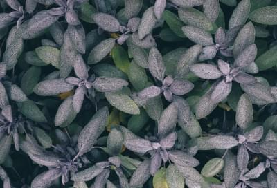

Сохранённые статьи
По ключевым словам: Природа, Тайга и 2 другим
Природа
31 июня 2020
В 2016 году Америка отмечала важный юбилей: сто лет назад здесь начала складываться система национальных парков – охраняемых территорий, где и сегодня каждый может приобщиться к природе.
ЛЕНТА.РУ
Парки

2 августа 2019
Фотограф отвлеклась от освещения суровой политической реальности Мексики, чтобы запечатлеть ускользающую красоту одного из местных чудес природы.
МЕДУЗА
Фотография

55 апреля 2030
Знаменитый фотограф снимает первозданные леса России, чтобы рассказать о необходимости их сохранения. В этот раз он отправился в Двинско-Пинежскую тайгу, где...
РИА
Парки
2 августа 2019
Фотограф отвлеклась от освещения суровой политической реальности Мексики, чтобы запечатлеть ускользающую красоту одного из местных чудес природы.
МЕДУЗА
Фотография
55 апреля 2030
Знаменитый фотограф снимает первозданные леса России, чтобы рассказать о необходимости их сохранения. В этот раз он отправился в Двинско-Пинежскую тайгу, где...
РИА